OptiTAC: screen-by-screen demo
17 captured views from the running project. Click a screenshot to open the full image.
1. Workspace & Tokens
Choose C or C++, load an example, edit source, configure input cases, and analyze. Tokens classify keywords, identifiers, literals, operators and delimiters.
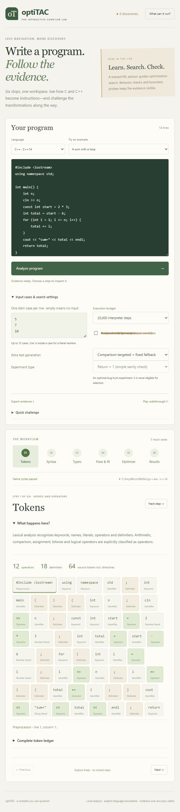
2. Syntax
Inspect the parsed structure of declarations, expressions, loops and function bodies.
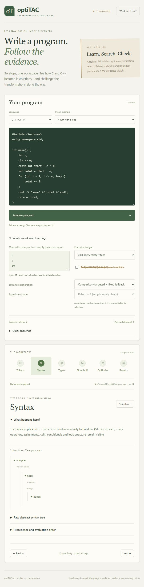
3. Types
Inspect symbol types, scopes and semantic checks.
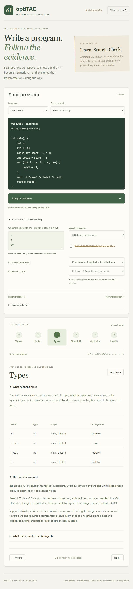
4. Flow & IR
Explore basic blocks, successor links, typed three-address instructions and backward liveness.
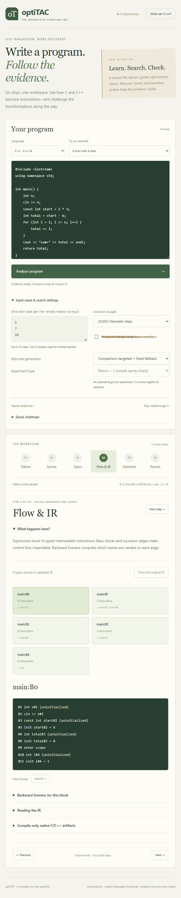
5. Optimize / Autopsy
The loop example reduces static cost from 30 to 24 units. Inspect each candidate and compare behavior on supplied and generated inputs.
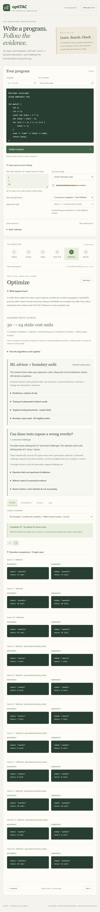
6. Results
Compare AST, original IR and selected IR outputs. For input 5 the program prints sum=15 and returns 15.
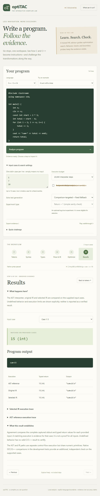
7. Counterfactual
Explore the alternative optimization view and its transformation evidence.
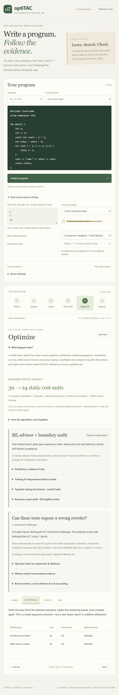
8. Structure
Inspect the structural view of optimization changes.
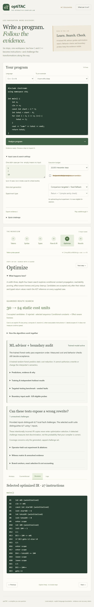
9. Logs
Review detailed rewrite history and intermediate pass evidence.
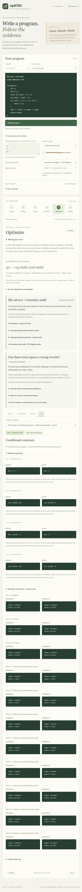
10. ML advisor
Expand pass predictions, explanations and training / holdout results. ML ranks exploration; behavior checks decide acceptance.
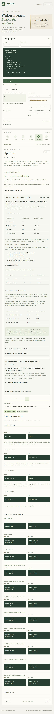
11. Validation-quality audit
Inspect the witness matrix, detected fault challenges and unresolved evidence.
12. Language scope
Read the supported scalar execution subset, broader native syntax checks and explicit limitations.
13. Hidden-fault research demo
A deliberately broken candidate is rejected using generated boundary evidence; inspect the automatic diagnosis and reduced counterexample.
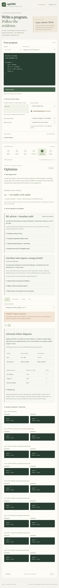
14. Native GCC artifacts
Generate actual compiler trees, GIMPLE and CFG for a class / vector example outside visual execution support.
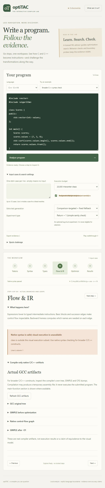
15. Undefined behavior
Signed overflow is reported explicitly instead of being certified as a valid result.
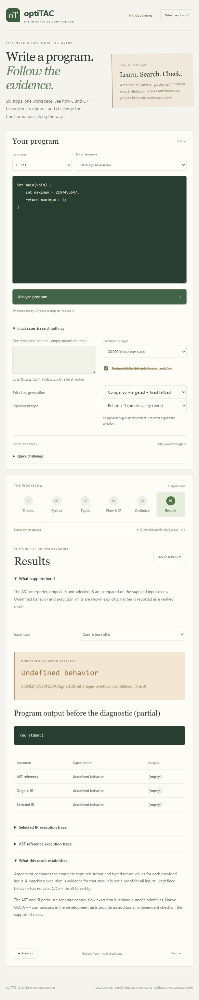
16. Prediction challenge
Enter sum=15, check it against the first case, and earn a discovery star. Guided replay walks through the stages; evidence can be exported as JSON.
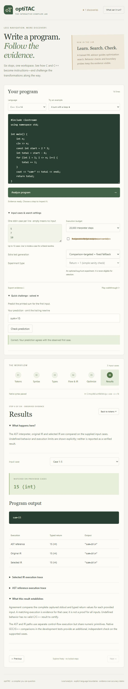
17. Adaptive audit
Inspect the experimental budgeted audit and its adaptive evidence trail.
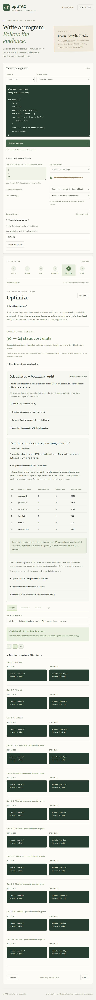